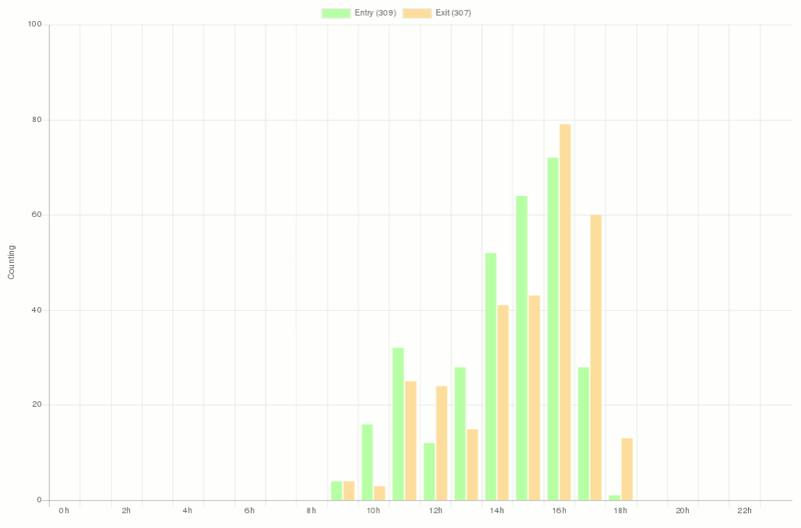
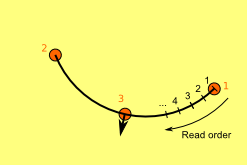
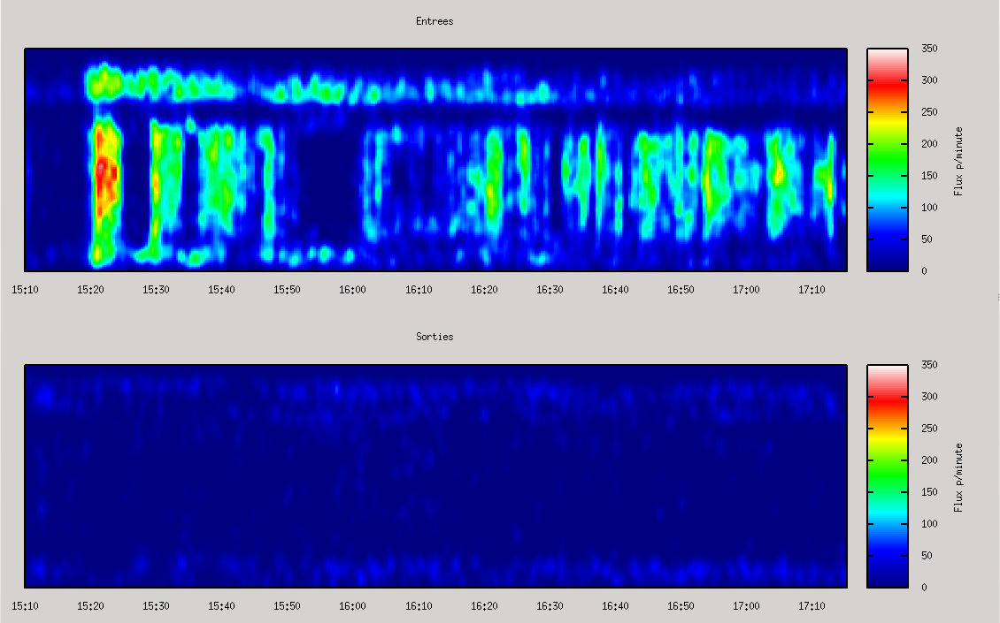
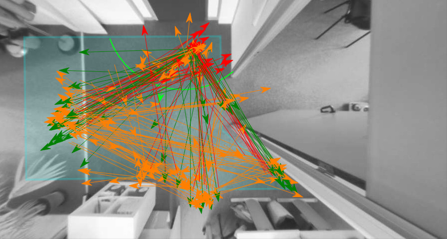
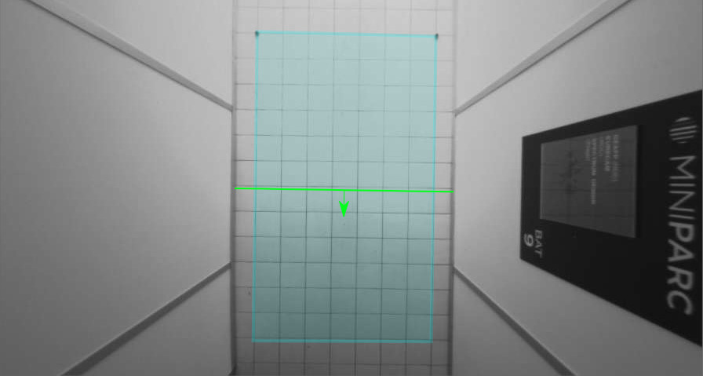

Comptipix 2D / 3D protocol
Introduction
Warning : All informations in this document are subjected to a NDA agreement.
PLEASE DO NOT DISTRIBUT !
This document describes UDP and HTTP communication protocols and files used in Comptipix 2D and 3D sensors. Its contains all information previously available in 2D/3D API documentations and 2D/3D files documentation :
- Versions → Overview of API changes across firmware versions
- UDP protocol → Communication with the sensor using UDP protocol
- HTTP protocol → Communication with the sensor using HTTP protocol
- HTTP protocol → Naming conventions of parameters used in API commands
- Command list → List of all API commands
- Dispatch protocols → Description of dispatch available in sensor
- File format → List of files generated by sensor
- Time and DST rules → Local time and Day light Saving Time (DST) rules defined in sensor
Protocol selection table
The sensor supports many features, to know which protocol you should use, you could follow this table :
| Protocol | Method | Available data | Use | Recommended for | Comment |
|---|---|---|---|---|---|
| UDP counting | Listen : Sensor → Client | Counting state | Real time (every second) |
Local network | Obsolete |
| UDP old | Query : Client → Sensor | Counting state | Real time, low latency (up to several time per second) |
Local network | Obsolete |
| UDP new | Query : Client → Sensor | State & Configuration Image |
Real time, low latency (up to several time per second) |
Local network | Much faster than HTTP Answer is limited to 64kb |
| HTTP protocol | Query : Client → Sensor | State & Configuration Image Data files |
Real time (up to few time per second) |
Local or distant networks | |
| FTP/HTTP dispatching | Dispatch : Sensor → Server | Data files | Periodical dispatching (up to every minute) |
Local or distant networks | Generate logs (optional) Short dispatching periods may wear sdcard due to regular writing |
| HTTP push | Dispatch : Sensor → Server | State & Configuration Image |
Periodical dispatching (up to every minute) |
Local or distant networks | Generate logs (optional) |
| Modbus | Query : Client → Sensor | Counting and occupancy state | Real time (up to few time per second) |
Local or distant networks |
Version of the document
| Version of the document | ||
|---|---|---|
| Date | Sensor firmware | Description |
| 2020-04-01 | 1.7.0 |
Reflect API changes for 1.7.0 release Add push protocol documentation |
| 2020-02-25 | 1.6.5 |
Reflect API changes for 1.6.5 release |
| 2019-12-26 | 1.6.4 |
Reflect API changes for 1.6.4 release Fix numbering of parameter lists in API documentation |
| 2019-10-21 | 1.6.3 | Reflect API changes for 1.6.3 release |
| 2019-05-27 | 1.6.2 |
Reflect final API changes for 1.6.2 release Add dispatch protocols documentation Add protocol selection table Fix API documentation under chrome browser |
| 2019-04-03 | 1.6.2 | First version |
Legal information
This document uses following external librairies :
© Eurecam 2019 - Benjamin Silvestre - Tiphaine Kein - Tristan Giovangrandi
Versions
Here is an overview of all API changes across different firmware versions.
UDP Protocols
Sensor can send its counting status and be queried using custom UDP protocols. New UDP procotol should be used for local applications requiring low latency realtime data.
Counting data protocol
For compatibilty reason, sensor can send each second counting data :
UDP parameters
When enabled, the sensor sends UDP counting packets every second. In the prolonged lack of counting frames (eg for 10s), the sensor must be considered as in error.
UDP sending can be configured with send_udp command. Default values are :
- Sending address : 255.255.255.255
- UDP port : 2000
Counting packet
The counting packets is 29 bytes long. The values are big endian type (MSB bytes first) :
| Description | Size (bytes) | Offset (byte) | Value |
|---|---|---|---|
| Random ID | 2 | +0 | various |
| Type | 1 | +2 | 0x01 |
| Entries | 2 | +3 | various |
| Exits | 2 | +5 | various |
| Option size | 1 | +7 | 0x04 |
| Option type | 1 | +8 | 0x02 |
| Option data | 2 | +9 | Counting ID |
| Option size | 1 | +11 | 0x12 |
| Option type | 1 | +12 | 0x10 |
| Option data | 16 | +13 |
|
Random ID of a counting packet is a random number generated at the startup.
It remains constant unless a sensor is turned off, restarted or the counting is reseted (with line_reset command).
Entries (or exits) are sum of the entry (or exit) since the start of the sensor.
These values are encoded in two bytes so they loop back to 0 after 65535.
→ Calculation of the number of entries or exits between 2 counting packets must therefore so be done in differential.
This requires some care to not get wrong values when the counters loop back to 0 after 65535 or after a reset (which could be detected by checking ID).
The Ccounting ID of the sensor may be used to check the source of the counting data without having to check the IP address of the packet. This value is set with send_udp command :
Example
Here is an example of a counting packet :
01
00 C3
00 AC
04 02 00 01
12 10 00 C2 00 01 00 00 00 00 00 A1 00 00 00 0B 00 00
- Random ID : 0xAD14
- Entries : 195
- Exits : 172
- Counting ID : 1
- Detailed counting :
- Line 1 : 194 / 161
- Line 2 : 1 / 0
- Line 3 : 0 / 11
- Line 4 : 0 / 0
Old UDP protocol
For compatibilty reason, the sensor supports some old UDP commands :
UDP parameters
UDP paramters for the old protocol are the following :
- sensor listen on UDP port 1600
UDP packet
The old UDP frames are as this :
| Description | Size (bytes) | Offset (byte) | Value |
|---|---|---|---|
| Header | 1 | +0 | 0x00 |
| Command | 1 | +1 | Depends on command |
| Data | Data | +2 | Depends on command |
| Trailer | 1 | +2+data | 0xFF |
Following commands are supported :
- counting data retrieving (0x4F)
- reboot (0x81)
- detection command (0xF0)
More information about old protocol are in the old protocol document.
New UDP protocol
The protocol allow these features :
- sensor listen on UDP port 1600
- allow unicast and broadcast communication
- sensors are identified by their mac address
- a sequence number identify a command and its answer
- command and answer have differente command number
- a simple CRC allows checking consistancy of data
A broadcast protocol allows detecting and setting-up a sensor which is in a different sub-network
The new UDP frames are as this :
| Description | Size (bytes) | Offset (byte) | Value |
|---|---|---|---|
| header | 1 | +0 | 0x01 |
| Mac address | 6 | +1 | FF-FF-FF-FF-FF-FF for broadcast command or MAC address of the sensor |
| Sequence number | 4 | +7 | User's defined, use at your own convinience |
| Command number | 1 | +11 | 0x00 - 0x7F → commands 0x80 - 0xFF → answers |
| Data size | 2 | +12 | Depends on command |
| Data | Data | +14 | Depends on command |
| CRC | 1 | +14+data | Xor of all previous bytes |
A frame is processed by the sensor only if :
- header is ok (0x1)
- mac address is broadcast or the sensor's mac address
- command number is between 0x00 and 0x7F
- data size = frame size – 15
- CRC is ok (Xor of all bytes = 0x00)
Answer frame are like this :
- mac address = sensor's mac address
- sequence number is the command's sequence number
- commande number is the command's number + 0x80
Available command numbers :
| Command | Number | Reply | Data | Description |
|---|---|---|---|---|
| Get/set parameter | 0x11 | 0x91 | various | |
| Get image (added in 1.6.3) | 0x12 | 0x92 | various | |
| Send firmware data (added in 1.6.3) | 0x13 | 0x93 | offset (4 bytes) end (1 byte) various |
Same as HTTP request on /REPROG? page
Due to UDP limitation, firmware must be sent in many small chunks. Offset should be set accordingly to the chunk address. Chunk size should equal or less than 4091 bytes. Last chunk should be tagged with end = 1, other chunks must have end = 0. |
| Reboot | 0x21 | 0xA1 | - | Same as restart command |
| Reset counting | 0x24 | 0xA4 | - | Same as line_reset command |
Notes :
- no authentication is supported on UDP protocol, authentication level is admin (see Authentication level)
- UDP frame are limited to 64Kb so answer's data might be cropped if it does not fit
Examples
Detection command using new UDP protocol :
- 0x01
- FF-FF-FF-FF-FF-FF-FF
- sequence number
- 0x11 (get/set)
- (size)
- data
- type&version&serial&network_state
- CRC
Sensor 112004 might answer this :
- 0x01
- FC-1F-C0-11-C0-04
- sequence number
- 0x91 (get/set reply)
- (size)
- data :
- type=CPX3
- version=1.0.0
- serial=112004
- network_state=192.168.0.100,255.255.255.0,192.168.0.1,0,FC-1F-C0-10-DE-FB
- CRC
HTTP Protocol
Sensor can be queried using standard HTTP protocol :
- Overview
- Special URLs
- HTTP port availables
- HTTP code response
- Authentication by token
- Authentication by IP
- Authentication levels
- Wget and Curl examples
Overview
All configuration, state and data from sensor can be queried using standard HTTP protocol using GET or POST requests. Please note than HTTP protocol has a much higher latency than UDP protocol.
All API commands are listed in Command list. Most of commands could be queried using /CONFIG? URL (see Special URLs).
Here a simple example which does not need any authentication :
| Query | GET /CONFIG?serial&rtc_utc_time |
|---|---|
| Reply |
serial=9 rtc_utc_time=2018-04-21 07:37:51 |
Tips : A HTTP GET request could be done using a web browser :
| Query | GET /CONFIG?serial&rtc_utc_time |
|---|---|
| Browser | http://ip_of_the_sensor/CONFIG?serial&rtc_utc_time |
The following example requires a valid token (see Authentication) :
| Query | GET /CONFIG?tkn=__TOKEN__&uptime |
|---|---|
| Reply |
uptime=169064 |
Sensor image from sensor can be get using /IMAGE? URL (see Special URLs):
| Query | GET /IMAGE?tkn=__TOKEN__ |
|---|---|
| Reply | [JPEG image] |
Special URLs
Several special URLs are defined to perform different tasks :
| Page | Description | Level |
|---|---|---|
| / | Index page, also used for old authentication | none |
| /index.html | Index page, also used for old authentication | none |
| /login.html | Index page if user is not authenticated | none |
| /logout.html | Logout page for authentication | none |
| /CONFIG? | Configuration API request page |
reader
However these requests are always accessible to allow authentication :
|
| /IMAGE? | Sensor image request page |
reader
→ Image commands are listed in Image command list
→ Please note that Privacy configuration may apply some restrictions |
| /REPROG? | Page to post firmware data |
super
→ firmware data should be in post data
→ firmware could be send by chunks (added in 1.3.0) using URL parameters /REPROG?offset,end
|
HTTP port availables
There are 3 available ports to use HTTP API :
- 80
- 1600
- 8080
HTTP code response
| HTTP Code | Meaning | What to do |
|---|---|---|
| 200 | Request OK | |
| 302 | Temporary redirect, happens when login or logout | |
| 400 | HTTP Request was not understood |
HTTP header is malformed → check your request Could also be a communication error → try again |
| 401 | Unauthenticated | You need to authenticate to acces to this resource or do this request |
| 404 | Resource not found | The resource does not exist. If your are trying to read a file from SD card, that means the file does not exist. |
| 418 | Failed to authenticate | Login or password is wrong |
| 503 | Resource temporary unavailable | If your are trying to read a file from SD card, that means the SD card is busy → wait 1s and try again |
Authentication by token
The authentication method is based on tokens. Tokens are unique, so they allow several clients on the same computer to access to the sensor with different level
It associates :
- client token
- access level (depends on login used)
- timeout, timeout is reset after each request (current timeout is 15 minutes)
| Request | Answer | |
|---|---|---|
| Login | POST /CONFIG?get_tkn with post data containing user and password "user=X&pass=X" |
HTTP code 200 if successful with the token in response data HTTP code 418 if login failed |
| Access to protected a resource | GET url?tkn=X or POST url?tkn=X GET url?tkn=X&... or POST url?tkn=X&... (tkn=X must be the first parameter) |
According to authentication :
|
| Logout | GET /logout.html?tkn=X | HTTP code 302,redirection to login page |
To allow authentication or super authentication on a sensor, the following urls do not request authentication :
- /CONFIG?get_tkn
- /CONFIG?serial&rtc_utc_time
- /CONFIG?serial&type&version&rtc_utc_time (version ≥ 1.1.3)
Authentication by IP (old method for compatibilty)
For compatibility, sensor supports old authentication method. Authentication is IP based so several clients on the same computer must share the same access level
It associates :
- client IP address
- access level (depends on login used)
- timeout, timeout is reset after each request (current timeout is 15 minutes)
| Request | Answer | |
|---|---|---|
| Login | POST / with post data "user=X&pass=X" | HTTP code 200 if successful HTTP code 418 if login failed |
| Access to protected a resource | GET url or POST url |
According to authentication :
|
| Logout | POST / with erronous login information GET /logout.html |
HTTP code 302,redirection to login page |
Authentication levels
These levels of authentication are defined :
- none unauthenticated user
- reader password could be changed by admin, default password is "reader"
- user password could be changed by admin, default password is "user"
- admin password could be changed by admin, default password is "admin"
- super password is calculated according to serial number and UTC date
This table sums authentication general rules, beware there are some exceptions as specified in Special pages for example :
| User | Configuration | State | Commands | Image | Reprog |
|---|---|---|---|---|---|
| none | KO | KO | KO | KO | KO |
| reader | get only | OK | KO | OK | KO |
| user | get only | OK | time, occupancy | OK | KO |
| admin | OK | OK | OK | OK | KO |
| super | OK | OK | OK | OK | OK |
Wget and Curl query examples
Wget and Curl are command line utilities which could be used to query the sensor using HTTP protocol.
Get a file
Examples using Wget or Curl to retrieve a data file. We assume that sensor IP address is 192.168.0.100, password for login user is “user” and we want the counting file for 2015-06-26.
Step 1 : get token
In this step we have to use post data to set user and password and get a token :
| Wget | wget --post-data "user=user&pass=user" "http://192.168.0.100/CONFIG?get_tkn" |
|---|---|
| Curl | curl -d "user=user&pass=user" "http://192.168.0.100/CONFIG?get_tkn" |
Step 2 : (OPTIONAL) check file info
We will check that file exist, before try to download it.
[YOUR_TOKEN] is the token you retrieved with preceding request (a typical token is a random string like “d3621f07”)
| Wget | wget "http://192.168.0.100/CONFIG?tkn=[YOUR_TOKEN]&sdcard_info=20150626.csv" --output-document=20150626_result.txt |
|---|---|
| Curl | curl "http://192.168.0.100/CONFIG?tkn=[YOUR_TOKEN]&sdcard_info=20150626.csv" |
We assume the response is “sdcard_info=222260,2015-06-26,17:33:00”.
→ It means that file exists, size is 222260 bytes, last write the 015-06-26 at 17:33:00
If response is “sdcard_info=-1,,” it means that file does not exist and you can stop here
Step 3 : Get the file
| Wget | wget "http://192.168.0.100/CONFIG?tkn=[YOUR_TOKEN]&sdcard_read=20150626.csv" --output-document=20150626.csv |
|---|---|
| Curl | curl "http://192.168.0.100/CONFIG?tkn=[YOUR_TOKEN]&sdcard_read=20150626.csv" -o 20150626.csv |
Query the state of all dispatching
Example using Wget to retrieve the status of all dispatching. We assume that sensor IP address is 192.168.0.100, password for login user is “user”.
Step 1 : Get token
In this step we have to use post data to set user and password and get a token :
| Wget | wget --post-data "user=user&pass=user" "http://192.168.0.100/CONFIG?get_tkn" |
|---|---|
| Curl | curl -d "user=user&pass=user" "http://192.168.0.100/CONFIG?get_tkn" |
Step 2 : Query the state of all dispatchs
[YOUR_TOKEN] is the token you retrieved with preceding request (a typical token is a random string like “d3621f07”)
| Wget | wget "http://192.168.0.100/CONFIG?tkn=[YOUR_TOKEN]&send_state_1&send_state_2&send_state_3&send_state_4" --output-document=all_dispatching_state.txt |
|---|---|
| Curl | curl "http://192.168.0.100/CONFIG?tkn=[YOUR_TOKEN]&send_state_1&send_state_2&send_state_3&send_state_4" -o all_dispatching_state.txt |
Step 3 : Read result
Read the file all_dispatching_state.txt → see command list : send_state_N
Parameters
API commands allow set or get parameters, this section describes conventions and limits.
Naming Convention
- N → Decimal number
- X → Hexadecimal number (example : "F1C6")
- T → Text, see associated description for maximum size
- I → IP v4 address (format XXX.XXX.XXX.XXX)
- M → MAC address (XX-XX-XX-XX-XX-XX)
- D → Date (in ISO format YYYY-MM-DD)
- H → Hour (in ISO format HH:MM:SS )
- DH → Date + Hour (in ISO format YYYY-MM-DD HH:MM:SS)
- C → config value, see associated description
- B → config bit value, see associated description
- J → Json data, see associated description
- others → see associated description
User column is the level needed to access this parameter (see authentication level).
Character and text max size
For text parameters like passwords or sdcard_site, a "character max size" information is given. This is the maximum length (including null ending char) for an ASCII char. In UTF8 encoding, beware that some chars has a length of 2, 3 or 4 bytes (comparing to 1 byte ASCII char).
Notice that Comptipix clips the string to the maximum available size. For parameters other than passwords you can re-read the value after setting it to check no clipping was done. For password, you can’t read it, so you have to check the size before setting it.
Examples :
| String | Byte length | Note | ||||||||||||||
|---|---|---|---|---|---|---|---|---|---|---|---|---|---|---|---|---|
| Hello | 5 + 1 | 5 ASCII char (1 byte each) + null char |
||||||||||||||
| Café | 5 + 1 | 3 ASCII char (1 byte each) + 1 UTF8 char (2 bytes) + null char |
||||||||||||||
| 国 | 3 + 1 | 1 UTF8 char (3 bytes) + null char |
||||||||||||||
| Hello 你好 ? | 14 + 1 |
8 ASCII char (1 byte each) + 2 UTF8 (3 bytes each) + null char
|
Command list
For compatibility reason, the sensor supports also most of old's Concentrix / iComptipix API. These old commands are not listed here. For example ip, ip_mask, ip_gateway, ip_dhcp and ip_mac were replaced by network_config command :
| Query | GET /CONFIG?tkn=__TOKEN__&ip&ip_mac&ip_mask&ip_dhcp&ip_gateway&network_config |
|---|---|
| Reply |
ip=192.168.0.149 ip_mac=FC-1F-C0-30-00-09 ip_mask=255.255.255.0 ip_dhcp=0 ip_gateway=192.168.0.1 network_config=192.168.0.149,255.255.255.0,192.168.0.1,0,0.0.0.0,0.0.0.0 |
Dispatch & Push protocols
Sensor can send its files using FTP and HTTP procotols :
Sensor can send its state and config using HTTP procotol :
For all protocols, dispatching is done according to send_config_N :
| File | Dispatch option | 2D sensor | 3D sensor |
|---|---|---|---|
| Counting | 0x1 → send counting files | OK | OK |
| Occupancy | 0x2 → send occupancy files | OK | OK |
| Area | 0x2 → send occupancy files | NO | OK |
| Line statistics | 0x1 → send counting files | ≥ 1.4.0 | NO |
| Track | 0x1 → send counting files | NO | OK |
| Log | 0x4 → send log files | OK | OK |
| Config | 0x8 → send extra files | OK | OK |
| Image | 0x8 → send extra files | OK | OK |
| Depthmap | 0x8 → send extra files | NO | OK |
FTP procotol
Dispatch could be done using FTP protocol :
- Sensor only support Passive FTP procotol (server create data connexion)
- FTPS procotol is not supported
- Sensor sends its file according to dispatch file table
Directory of dispatching could be modified by several options configured by send_config_N and send_address_N. For a 3D sensor (sensor type SX3D) with serial number 1234 sending 2019-05-16 data files, dispatching directory will be :
| Options | - | Serial | Type | Type+Serial |
|---|---|---|---|---|
| - | /dir/ | /dir/1234/ | /dir/SX3D/ | /dir/SX3D-1234/ |
| Date | /dir/2019/05/ | /dir/1234/2019/05/ | /dir/SX3D/2019/05/ | /dir/SX3D-1234/2019/05/ |
HTTP Dav protocol
Dispatch could be done using HTTP Dav protocol. WebDav is an HTTP extention which allows to send and retrieve files similar to FTP :
- MKCOL, HEAD, PUT requests must be supported
- HTTPS procotol is not supported
- Sensor sends its file according to dispatch file table
Directory of dispatching could be modified by several options configured by send_config_N and send_address_N. For a 3D sensor (sensor type SX3D) with serial nb 1234 sending 2019-05-16 data files, dispatching directory will be :
| Options | - | Serial | Type | Type+Serial |
|---|---|---|---|---|
| - | /dir/ | /dir/1234/ | /dir/SX3D/ | /dir/SX3D-1234/ |
| Date | /dir/2019/05/ | /dir/1234/2019/05/ | /dir/SX3D/2019/05/ | /dir/SX3D-1234/2019/05/ |
HTTP Post protocol
Warning : Due to a bug, firmware versions < 1.3.0 does not interpret correctly server answer
→ Upgrading firmware is recommended to get consisent behavior in post protocol
Protocol
Dispatch could be done using HTTP Post protocol :
- HTTPS procotol is not supported
- Sensor sends its file according to dispatch file table
Post procotol used by sensor is the following one for each file :
- Sensor send a GET request to query if a file should be sent
- Server should reply by a 200 answer. Answer can contains :
- 1 → file is skipped
- 2 → dispatching is aborded
- empty or other answer → file is sent
- Sensor send a POST request to send a file
- Server should reply by a 200 answer
Dispatching URL is the following one for the GET. Type and serial depends on sensor, file and size depends on file :
- server:port → configured in send_address_N
- url → configured in send_address_N
- type → sensor type (CPX3 or SX3D)
- serial → sensor serial number
- file → name of the file (example : 20190516.csv)
- size → size of the file in byte
- check → this is a check request (there is no post data)
Dispatching URL is the following one for the POST. Post data contains the file :
- server:port → configured in send_address_N
- url → configured in send_address_N
- type → sensor type (CPX3 or SX3D)
- serial → sensor serial number
- file → name of the file (example : 20190516.csv)
- size → size of the file in byte
- data → this is a send data request (post data contains the file)
Examples
In API examples there are several examples available for Comptipix's HTTP Post procotol :
- A minimal PHP based example : http_post_send.php
- A less basic PHP based example : http_post_send_full.php
- A GO lang full POST server : http_post_send
HTTP Push protocol
Warning : Push protocol is not available in firmwares < 1.7.0
→ Upgrading firmware is required to use push protocol
Protocol
Push protocol :
- HTTPS procotol is not supported
Dispatching URL is the following one for the CONFIG request. Type and serial depends on sensor :
- server:port → configured in push_address_N
- url → configured in push_address_N
- type → sensor type (CPX3 or SX3D)
- serial → sensor serial number
- push → this is a push CONFIG? request configured by push_config_N
Dispatching URL is the following one for the IMAGE request. Type and serial depends on sensor :
- server:port → configured in push_address_N
- url → configured in push_address_N
- type → sensor type (CPX3 or SX3D)
- serial → sensor serial number
- push&image=sensor_r → this is a push IMAGE? request (sending sensor_r image) configured by push_config_N
- Either :
- jpeg → this is a jpeg image
- bmp → this is a bmp image
Examples
Code
In API examples there is one example available for Comptipix's HTTP push procotol :
- A minimal PHP based example : http_post_send.php
Push config example
With the following configuration :
- push server → 192.168.0.200:8080
- push url → my_post_server.php
- push data → rtc_utc_time|uptime|line_counting_1|line_counting_2|line_counting_3|line_counting_4
- push option → no option
Post URL will be :
Post data could be similar to this :
uptime=62497
line_counting_1=0,0,0,0,0
line_counting_2=0,6,2,2,1
line_counting_3=0,0,0,0,0
line_counting_4=1,0,0,0,0
Or if remove name option is used :
62497
0,0,0,0,0
0,6,2,2,1
0,0,0,0,0
1,0,0,0,0
Push image example
With the following configuration :
- push server → 192.168.0.200:8080
- push url → my_post_server.php
- push data → sensor|tiny
- push option → image
Post URL will be :
Post data could be similar to this :
File format
Sensor can write these files :
| File | SD card directory | Filename | Format | 2D sensor | 3D sensor |
|---|---|---|---|---|---|
| Counting | /DATA/YYYY/MM/ | YYYYMMDD.csv | CSV file | OK | OK |
| Occupancy | /DATA/YYYY/MM/ | YYYYMMDD_presence.csv | CSV file | OK | OK |
| Area | /DATA/YYYY/MM/ | YYYYMMDD_area.csv | CSV file | NO | OK |
| Line statistics | /DATA/YYYY/MM/ | YYYYMMDD_line.csv | CSV file | ≥ 1.4.0 | NO |
| Track | /DATA/YYYY/MM/ | YYYYMMDD_track.csv | CSV file | NO | OK |
| Log | /DATA/YYYY/MM/ | log_YYYYMMDD.csv | CSV file | OK | OK |
| Config | /DATA/YYYY/MM/ | YYYYMMDD.txt | text file | OK | OK |
| Image | /DATA/YYYY/MM/ | YYYYMMDD.jpg | JPEG image | OK | OK |
| Depthmap | /DATA/YYYY/MM/ | YYYYMMDD.bmp | Bitmap image | NO | OK |
→ Select a file to display associated documentation
On the SD Card, files are inside a sub directory : /DATA/YYYY/MM/
- DATA = data directory
- YYYY = year (4 digits)
- DD = month (2 digits)
Counting file
These files store counting data (entries, exits). Number of channels may vary according to configuration.
File and Filename
It is a CSV file (without quote for text field, name shouldn't contains comma), one file per day is generated. File’s new line type is “Line Feed” : LF (ie: one ASCII char: 0x0A , escape sequence: \n)
Filename : YYYYMMDD.csv
- YYYY = year (4 digits)
- MM = month (2 digits)
- DD = day (2 digits)
The file has an header and data. Header might be repeated if associated information change.
Header
Header might be repeated if associated information change. Following is a typical counting header :
fichier de comptage v2
1,Entree,passage
2,Arche-l1,acces
3,Arche-l3,passage
4,c1000,passage
5,openspace,passage
6,Laterale,passage
7,Plafond,passage
8,Vitrine,passage
Date,Heure,E1,S1,E2,S2,E3,S3,E4,S4,E5,S5,E6,S6,E7,S7,E8,S8
Header contains :
- Site name and chain name definitions
- Header text, should be discarded
- Channel definitions :
- Channel number
- Name of the channel
- Type of the channel :
- acces for entrance or exit to the site
- passage for crossing inside a site
- empty is the channel is disabled
- Column definitions, should be discarded
Notice : A valid site name and chain name must contains :
- 2 columns (site and chain names)
- A valid site name and chain name must precede fichier de comptage v2 header text
Notice : A valid channel definition must contains :
- 3 columns (number, name and type
- first column must be a number bigger than 0
Data
Each data line contains :
- Date : format DD/MM/YYYY (D = day, M = month, Y = year)
- Hour : format HH:MM:SS (H = hour, M = minute, S = second)
- For each channel :
- Entry sum for timestamp
- Exit sum for timestamp (crossing sensors do not have exit)
There is one line of data for each period, number of columns depends on channel number. Following is typical counting data :
22/05/2013,18:35:00,1,0,1,0,0,0,2,0,2,0,1,0,1,0,0,0
22/05/2013,18:36:00,0,0,0,0,0,0,0,0,0,0,0,0,0,0,0,0
22/05/2013,18:37:00,0,0,1,0,0,0,0,0,0,0,1,0,0,0,0,0
22/05/2013,18:38:00,1,0,1,1,0,0,1,2,1,2,0,0,1,1,0,0
22/05/2013,18:39:00,0,0,0,0,0,0,0,0,0,0,3,0,0,0,0,0
...
Notice : A valid data line must contains :
- at least 4 columns (date, hour, entries, exits)
- first column must be a valid date and the date must be the same as the filename's
- second column must be a valid hour
Notice : By default dates are in DD/MM/YYYY format. Using configuration, they could also be in ISO-format (YYYY-MM-DD). In file parsing, it is advised to support both formats.
Timestamp definition depends on the data resolution. With an 1 minute resolution, timestamp 8:00:00 sums counting from 8:00:00 to 8:00:59. With a 15 minutes writing period, timestamp 8:00:00 sums counting from 8:00:00 to 8:14:59
Number of columns depends on number of channels : columns = 2 + 2 x channels. By default the sensor write the sum of all counting lines, so default counting files have 1 channel (4 columns).
Warning : There may be some gaps in data or multiple data with same timestamp, if :
- device was powered off
- null lines are skipped
- change in hour due to Daylight Saving Time
- change in hour due to automatic synchronization or manual adjustment
→ If many data have the same timestamp, you should sum data
Options
Counting resolution
This parameter (configured with sdcard_config command) set the time resolution for counting data. Some available values :
- 0 → no counting data
- 20 → one counting line every 20 seconds
- 60 → one counting line per minute (default)
- 600 → one counting line every 10 minutes
- 3600 → on counting line every hour
- etc..
Write counting lines separately
This parameter (configured with sdcard_config command) force the sensor to write the detail of each counting line. A sensor which has 4 counting lines(channels) will have 8 data columns (+ 2 columns for date and hour).
- Line 1 entries / exits
- Line 2 entries / exits
- Line 3 entries / exits
- Line 4 entries / exits
fichier de comptage v2
1,line 1,passage
2,line 2,passage
3,line 3,acces
4,line 4,passage
Date,Heure,E1,S1,E2,S2,E3,S3,E4,S4
01/03/2019,00:00:00,0,0,0,0,0,0,0,0
01/03/2019,00:00:11,0,0,0,0,0,0,0,0
01/03/2019,00:00:20,0,0,0,0,0,0,0,0
01/03/2019,00:00:30,0,0,0,0,0,0,0,0
01/03/2019,00:00:40,0,0,0,0,0,0,0,0
01/03/2019,00:00:50,0,0,0,0,0,0,0,0
01/03/2019,00:01:00,0,0,0,0,0,0,0,0
...
Adult / Child counting
Added in 1.5.0 version for 3D sensors, adult / child classification can add extra channels to counting data. Theses channels are inserted after each line channels.
- stereo_diff to enable adult / child classification.
- sdcard_config to enable adult or child extra channels
- sdcard_adult command to configure adult sum column name.
- sdcard_child command to configure child sum column name.
I/O boards
Added in 1.3.0 version, inputs from I/O extension boards can we written in counting files as extra channels (providing a board is detected). These extra channels are added after counting line channels.
- ext_io_rs232 command controls the rs232 input.
- ext_io_in command configure the I/O dry inputs
Remove null data
If this option is enabled (with sdcard_config command), line of data which contains only 0 are not written to files.
Following is typical counting data (the same as in previous section Data) with force remove null data option enabled → line 18:36:00 has no counting and it’s not written :
22/05/2013,18:35:00,1,0,1,0,0,0,2,0,2,0,1,0,1,0,0,0
22/05/2013,18:37:00,0,0,1,0,0,0,0,0,0,0,1,0,0,0,0,0
22/05/2013,18:38:00,1,0,1,1,0,0,1,2,1,2,0,0,1,1,0,0
22/05/2013,18:39:00,0,0,0,0,0,0,0,0,0,0,3,0,0,0,0,0
...
Force ISO date
If this option (added in 1.3.1 version) is enabled (with sdcard_config command), ISO date format is used (YYYY-MM-DD instead of DD/MM/YYYY).
Following is typical counting data (the same as in previous section Data) with force ISO option enabled → date are ISO formatted :
2013-05-22,18:35:00,1,0,1,0,0,0,2,0,2,0,1,0,1,0,0,0
2013-05-22,18:36:00,0,0,0,0,0,0,0,0,0,0,0,0,0,0,0,0
2013-05-22,18:37:00,0,0,1,0,0,0,0,0,0,0,1,0,0,0,0,0
2013-05-22,18:38:00,1,0,1,1,0,0,1,2,1,2,0,0,1,1,0,0
2013-05-22,18:39:00,0,0,0,0,0,0,0,0,0,0,3,0,0,0,0,0
...
Examples
Here are some countings file examples :
| Default option | Remove null data Adult/Child counting |
Example of graphical display of counting data |
|---|---|---|
| 20190116.csv | 20190222.csv |  counting_graph.png |
Occupancy file
These files store occupancy information (occupancy, entries, exits, corrections). Only 1 occupancy channel is stored in files. Occupancy files are created only if occupancy is enabled (with occupancy_config command).
File and Filename
It is a CSV file (without quote for text field, name shouldn't contains comma), one file per day is generated. File’s new line type is “Line Feed” : LF (ie: one ASCII char: 0x0A , escape sequence: \n)
Filename : YYYYMMDD_presence.csv
- YYYY = year (4 digits)
- MM = month (2 digits)
- DD = day (2 digits)
The file has an header and data. Header might be repeated if associated information change
.Header
Header might be repeated if associated information change. Following is a typical occupancy header :
fichier de presence v1
Date,Heure,E,S,P,C+,C-
Header contains :
- Site name and chain name definitions
- Header text, should be discarded
- Column definitions, should be discarded
Notice : A valid site name and chain name must contains :
- 2 columns (site and chain names)
- A valid site name and chain name must precede fichier de presence v1 header text
Data
Each data line contains :
- Date : format DD/MM/YYYY (D = day, M = month, Y = year)
- Hour : format HH:MM:SS (H = hour, M = minute, S = second)
- Entry sum since since last reset
- Exit sum since last reset
- Current occupancy, if there is no clipping or correction, occupancy = entry - exit
- Positive correction on occupancy (occupancy set or offset done by user)
- Negative correction on occupancy (occupancy set or offset done by user)
Clipping on occupancy does not imply an occupancy correction
An occupancy reset does not imply an occupancy correction
There is one line of data for each period, number of columns is fixed to 7. Following is typical occupancy data :
22/05/2013,18:35:00,34,33,8,0,0
23/05/2013,17:57:00,34,33,7,0,-1
23/05/2013,17:58:00,34,33,7,0,0
23/05/2013,17:59:00,34,34,0,0,0
23/05/2013,18:00:00,34,35,1,0,0
23/05/2013,18:01:00,34,35,6,5,0
...
Notice : A valid data line must contains :
- 7 columns (date, hour, entries, exits, occupancy, correction +, correction -)
- first column must be a valid date and the date must be the same as the filename's
- second column must be a valid hour
Notice : By default dates are in DD/MM/YYYY format. Using configuration, they could also be in ISO-format (YYYY-MM-DD). In file parsing, it is advised to support both formats.
Timestamp definition depends the data resolution. With an 1 minute resolution, timestamp 8:00:00 is the current state at 8:00:59. With a 15 minutes writing period, timestamp 8:00:00 is the state at 8:14:59
There may be some gaps in data or multiple data with same timestamp, if :
- device was powered off
- change in hour due to DST
- change in hour due to synchronization or manual adjustment
If many data have the same timestamp, you should discard lowest occupancy data.
Options
Counting resolution
This parameter (configured with sdcard_config command) set also the time resolution for occupancy data. Some possible values :
- 0 → no occupancy data
- 20 → one occupancy data every 20 seconds
- 60 → one occupancy data per minute (default)
- 600 → one occupancy data every 10 minutes
- 3600 → on occupancy data every hour
- etc..
Remove null data (version < 1.4.0)
This option doesn't do anything.
Remove null data (≥ 1.4.0)
If this option is enabled (with sdcard_config command), line of data which contains only 0 (for sums, occupancy and corrections) are not written to files.
Following is typical counting data (the same as in previous section Data) with force remove null data option enabled → line 17:59:00 has only 0 and it’s not written :
23/05/2013,17:56:00,34,33,8,0,0
23/05/2013,17:57:00,34,33,7,0,-1
23/05/2013,17:58:00,34,33,7,0,0
23/05/2013,18:00:00,34,35,1,0,0
23/05/2013,18:01:00,34,35,6,5,0
...
Force ISO date
If this option (added in 1.3.1 version) is enabled (with sdcard_config command), ISO date format is used (YYYY-MM-DD instead of DD/MM/YYYY).
Following is typical occupancy data (the same as in previous section Data) with force ISO option enabled → date are ISO formatted :
2013-05-23,17:56:00,34,33,8,0,0
2013-05-23,17:57:00,34,33,7,0,-1
2013-05-23,17:58:00,34,33,7,0,0
2013-05-23,17:59:00,34,34,0,0,0
2013-05-23,18:00:00,34,35,1,0,0
2013-05-23,18:01:00,34,35,6,5,0
...
Area file
Area files are only generated by 3D sensors. They record statistics for each enabled area during a time period. Area files are created only if at least 1 area is enabled (with area_config_N command) and area files are enabled (with sdcard_stereo command).
File and Filename
It is a CSV file, one file per day is generated. File’s new line type is “Line Feed” : LF (ie: one ASCII char: 0x0A , escape sequence: \n)
Filename : YYYYMMDD_area.csv
- YYYY = year (4 digits)
- MM = month (2 digits)
- DD = day (2 digits)
The file has an header and data.
Header
There is a simple column header, only at the begining of the file :
Data
In this file, there are :
- One line per time period
- One line per enabled area (ID of the area, first area has the number 1, the second is 2 ...)
A line data consists in (number of columns is fixed to 10) :
- YYYY-MM-DD : local date in ISO format
- HH:MM:SS : local hour in ISO format
- ID : id of the area (usually from 1 to 4)
- ENTRY : number of entries to the area during the time period
- EXIT : number of exits from the area during the time period
- MIN : min occupancy of the area during the time period
- MAX : max occupancy of the area during the time period
- AVG, AVG_DIV : to compute average occupancy during the time period
- TIME : total occupancy time during the time periode (in second x person)
Average occupancy during time period could be computed by : AVG / AVG_DIV
Average occupancy time during time period could be computed by : TIME x AVG_DIV / AVG
Notice : A valid data line must contains :
- 10 columns
- first column must be a valid date and the date must be the same as the filename's
- second column must be a valid hour
- Area ID must be at least 1
Following is typical area data :
2019-03-06,00:00:00,1,0,0,0,0,0,598,0
2019-03-06,00:01:00,1,0,0,0,0,0,596,0
2019-03-06,00:02:00,1,0,0,0,0,0,606,0
2019-03-06,00:03:00,1,0,0,0,0,0,605,0
...
2019-03-06,10:34:00,1,30,31,0,2,358,606,0
2019-03-06,10:35:00,1,28,28,0,2,282,595,0
2019-03-06,10:36:00,1,31,31,0,2,422,606,0
2019-03-06,10:37:00,1,32,32,0,2,296,595,0
...
Options
Counting resolution
This parameter (configured with sdcard_config command) set also the time resolution for area data. Some possible values :
- 0 → no area data
- 20 → one area data per area every 20 seconds
- 60 → one area data per area per minute (default)
- 600 → one area data per area every 10 minutes
- 3600 → on area data per area every hour
- etc...
Remove null data
If this option is enabled (with sdcard_config command), line of data which contains 0 for entry, exit and max occupancy are not written to files.
Examples
Here are some area file examples :
| 3D sensor area file (default options) |
3D sensor area file (with remove null option) |
|---|---|
| 20190304_area.csv | 20190226_area.csv |
Line statistics file
These files store statistic data (position of entry/exit and width spread) along lines. Statistic files are supported by 2D sensor in version ≥ 1.4.0
File and Filename
It is a CSV file (without quote for text field), one file per day is generated. File’s new line type is “Line Feed” : LF (ie: one ASCII char: 0x0A , escape sequence: \n)
Filename : log_YYYYMMDD_line.csv
- YYYY = year (4 digits)
- MM = month (2 digits)
- DD = day (2 digits)
The file has an header and data.
Header
There is a simple column header, only at the begining of the file :
Data
In this file, there are :
- One line per time period
- One line per enabled line (ID of the line, first line has the number 1, the second is 2 ...)
A line data consists in (number of columns depends on line configuration, it could be more than 200) :
- YYYY-MM-DD : local date in ISO format
- HH:MM:SS : local hour in ISO format
- ID : id of the line (usually from 1 to 4)
- NB : number of columns for entries
- ENTRY : Sums of entries for each block for the line (entry spreads)
- NB : number of columns for exits
- EXIT : Sums of exits for each block for the line (exit spreads)
- NB : number of columns for width spread
- WIDTH : Sums of countings for each width (width spreads)
Following is typical line data for a line with 9 blocks :
2019-03-06,00:00:00,9,0,0,0,0,0,0,0,0,0,0,9,0,0,0,0,0,0,0,0,0,0,16,0,0,0,0,0,0,0,0,0,0,0,0,0,0,0,0
2019-03-06,00:01:00,9,0,0,0,0,0,0,0,0,0,0,9,0,0,0,0,0,0,0,0,0,0,16,0,0,0,0,0,0,0,0,0,0,0,0,0,0,0,0
2019-03-06,00:02:00,9,0,0,0,0,0,0,0,0,0,0,9,0,0,0,0,0,0,0,0,0,0,16,0,0,0,0,0,0,0,0,0,0,0,0,0,0,0,0
2019-03-06,00:03:00,9,0,0,0,0,0,0,0,0,0,0,9,0,0,0,0,0,0,0,0,0,0,16,0,0,0,0,0,0,0,0,0,0,0,0,0,0,0,0
...
2019-03-06,10:34:00,9,0,0,0,0,0,0,0,0,0,0,9,0,0,0,0,0,0,0,0,0,0,16,0,0,0,0,0,0,0,0,0,0,0,0,0,0,0,0
2019-03-06,10:35:00,9,0,0,1,0,0,0,0,1,0,0,9,0,0,0,1,0,0,0,0,0,0,16,0,0,0,0,0,1,2,0,0,0,0,0,0,0,0,0
2019-03-06,10:36:00,9,0,0,0,0,0,0,0,0,0,0,9,0,0,0,0,0,0,0,0,0,0,16,0,0,0,0,0,0,0,0,0,0,0,0,0,0,0,0
2019-03-06,10:37:00,9,0,0,0,0,0,0,0,0,0,0,9,0,0,0,0,0,0,0,1,0,0,16,0,0,0,0,0,0,1,0,0,0,0,0,0,0,0,0
...
Entry / Exit spreads
Entry or exit spreads are the repartition of counting along the line. Line is split in N segments according to block value. Read order for a default line (entries toward bottom) is from right to left :
- In this case, an entry or exit on the right of line will increase first columns
- In this case, an entry or exit on the left of line will increase last columns

Coordinate of each points for a line N could known by using line_state_N command
Width spread
Width spread is the repartition in width (in number of block) of counting from 1 to N. Width spread can hint wrong block configuration.
Options
Enable line files
This parameter (configured with sdcard_cptx command) enable or disable line statistic files.
Counting resolution
This parameter (configured with sdcard_config command) set also the time resolution for line data. Some possible values :
- 0 → no line data
- 20 → one line data per line every 20 seconds
- 60 → one line data per line per minute (default)
- 600 → one line data per line every 10 minutes
- 3600 → on line data per line every hour
- etc...
Notice : Line data generates big files, it is not advised to use short time resolutions
Remove null data
If this option is enabled (with sdcard_config command), line of data which contains 0 for entry and exit are not written to files.
Notice : Line data generates big files, it is advised to enable remote null option
Examples
Here are some line file examples :
| 2D sensor line file (with remove null option) |
Example of graphical display Data could be used to generate a kind of heatmap of the line |
|---|---|
| 20171010_line.csv |  20171010_line_heatmap.png |
Track file
Track files record track start-stop points of targets. They can be generated by 3D sensor :
File and Filename
It is a CSV file (without quote for text field), one file per day is generated. File’s new line type is “Line Feed” : LF (ie: one ASCII char: 0x0A , escape sequence: \n)
Filename : log_YYYYMMDD_track.csv
- YYYY = year (4 digits)
- MM = month (2 digits)
- DD = day (2 digits)
The file has an header and data.
Header
There is a simple column header, only at the begining of the file :
Data
In this file, there are :
- One line per recorded track
Tracks are recorded when they exit the detection area or when they are lost. Short tracks are not recorded unless they generated some entries or exits.
A line data consists in (number of columns is fixed to 10) :
- YYYY-MM-DD : local date in ISO format
- HH:MM:SS : local hour in ISO format
- SX,SY : 2D coordinates of the start of the track (in pixels from center of the left sensor)
- EX,EY : 2D coordinatse of the end of the track (in pixels from center of the left sensor)
- H : height of the tracked object (in centimeters)
- TIME : duration of the tracking (in seconds)
- E : entrie sum across all lines
- X : exit sum across all lines
Warning : 3D firmwares < 1.5.0 do not have entry and exit columns
Following is typical track data :
2019-04-02,07:07:51,443,238,389,407,165,2,0,0
2019-04-02,07:08:24,412,375,122,255,147,2,0,0
2019-04-02,07:09:22,156,243,351,72,154,2,0,1
2019-04-02,07:12:43,324,83,109,275,154,2,1,0
2019-04-02,07:13:24,140,253,340,81,146,2,0,1
2019-04-02,07:15:56,345,82,128,229,148,2,1,0
2019-04-02,07:17:28,387,381,311,331,151,4,0,0
...
Examples
Here are some track file examples :
| Sensor track file | Example of graphical display using left image as background |
|---|---|
| 20190402_track.csv |  track_display.jpg |
Log file
These files store log information of the product such as startup events, network events, SD card events or sensor state :
File and Filename
It is a CSV file (without quote for text field, name shouldn't contains comma), one file per day is generated. File’s new line type is “Line Feed” : LF (ie: one ASCII char: 0x0A , escape sequence: \n)
Filename : log_YYYYMMDD.csv
- YYYY = year (4 digits)
- MM = month (2 digits)
- DD = day (2 digits)
The file has only data and no header
Data
Each line represents an event or a state information and contains :
- Date : format DD/MM/YYYY (D = day, M = month, Y = year)
- Hour : format HH:MM:SS (H = hour, M = minute, S = second)
- Type : event or state type
- Various values associated to event or state separated by comma
Notice : By default dates are in DD/MM/YYYY format. Using configuration, they could also be in ISO-format (YYYY-MM-DD). In file parsing, it is advised to support both formats.
Following is typical log data :
17/06/2015,06:00:00,sd:mem,CTX_122013,3780,3780
17/06/2015,10:06:43,startup,122013,v1.0.X (~5307)
17/06/2015,10:06:46,net:ok,192.168.0.100
17/06/2015,10:06:47,sd:ok,CTX_122013,3780,3780
17/06/2015,10:31:42,sntp:ok,internet,-1491
17/06/2015,12:00:00,temp,36
17/06/2015,12:00:00,sensor,98,132
...
List of event and state types, some events are not available in earlier firmwares. State information are periodically generated according to sdcard_config. Other events are generated only when the event occures.
| Feature | Name | Type | Description | Associated values | Version |
|---|---|---|---|---|---|
| - | startup | Event | Startup of the device |
|
All |
| config | config:reset | Event | Reset configuration | All | |
| config:write | Event | Writing configuration | All | ||
| - | temp | State | Sensor temperature state |
|
All |
| - | sensor | State | Sensor image state information |
|
All |
| - | uptime | State | Uptime state information |
|
≥ 1.5.0 |
| Network | net:ok | Event | Network ok |
|
All |
| net:err | Event | Network cable error | All | ||
| net:dhcp_err | Event | Network DHCP error | All | ||
| SD card | sd:ok | Event | SD card detected |
|
All |
| sd:mem | State | SD card state information | All | ||
| sd:err | Event | SD card error | All | ||
| sd:format | Event | SD card formatted | All | ||
| sd:erase | Event | File erased on SD card |
|
All | |
| SNTP | sntp:ok | Event | SNTP synchronization ok |
|
All |
| sntp:err | Event | SNTP synchronization error |
|
All | |
| Send | send:ok | Event | Dispatch ok |
|
All |
| send:err | Event | Dispatch error |
|
All | |
| send:stat | State | Dispatch daily statistics |
|
≥ 1.7.0 | |
| Push | push:ok | Event | Push ok |
|
≥ 1.7.0 |
| push:err | Event | Push ok |
|
≥ 1.7.0 | |
| push:stat | State | Push daily statistics |
|
≥ 1.7.0 | |
| Occupancy | occ:reset | Event | Occupancy reset |
|
≥ 1.4.0 |
| occ:set | Event | Occupancy set |
|
≥ 1.4.0 | |
| occ:offset | Event | Occupancy offset |
|
≥ 1.4.0 | |
| Reprog | reprog:ok | Event | Successful firmware update |
|
≥ 1.5.0 |
| reprog:err | Event | Firmware update failure |
|
≥ 1.5.0 | |
| IO | io:ok | Event | I/O extension board detected | ≥ 1.4.1 | |
| io:err | Event | I/O extension board failure | ≥ 1.4.1 | ||
| Lora | lora:ok | Event | Lora extension board detected |
|
≥ 1.4.1 |
| lora:err | Event | Lora extension board failure | ≥ 1.4.1 | ||
| lora:join | Event | Lora network join ok |
|
≥ 1.4.1 | |
| lora:lost | Event | Lora network lost | ≥ 1.4.1 | ||
| lora:stat | State | Lora daily statistics |
|
≥ 1.7.0 |
Options
Log resolution
Log resolution is configured with sdcard_config command. When log resolution is > 0, following events are periodically added to log. They could by used to monitor sensor health. By default log resolution is 6h (resolution = 720) :
- uptime → Sensor uptime and version (added in 1.5.0 version)
- temp → Temperature
- sensor → Image average and exposure
- sd:mem → SDcard freespace
Force ISO date (version < 1.6.1)
This option doesn't do anything.
Force ISO date (version ≥ 1.6.1)
If this option is enabled (with sdcard_config command), ISO date format is used (YYYY-MM-DD instead of DD/MM/YYYY).
Following is typical log data (the same as in previous section Data) with force ISO option enabled → date are ISO formatted :
2015-06-17,06:00:00,sd:mem,CTX_122013,3780,3780
2015-06-17,10:06:43,startup,122013,v1.0.X (~5307)
2015-06-17,10:06:46,net:ok,192.168.0.100
2015-06-17,10:06:47,sd:ok,CTX_122013,3780,3780
2015-06-17,10:31:42,sntp:ok,internet,-1491
2015-06-17,12:00:00,temp,36
2015-06-17,12:00:00,sensor,98,132
...
Examples
Here are some log file examples :
| Sensor log file (default options) |
Sensor log file (default option) |
|---|---|
| log_20190117.csv | log_20190203.csv |
Config file
These files store settings of the sensor. Optionally, they can store also the state of the sensor. Similar to the export files, config file can be used to import the configuration of a sensor. They can be written once a day. Config files are created only if extra time is set in sdcard_config parameter :
File and Filename
It is a text file, one file per day is written. File’s new line type is “Line Feed” : LF (ie: one ASCII char: 0x0A , escape sequence: \n)
Filename : YYYYMMDD.txt
- YYYY = year (4 digits)
- MM = month (2 digits)
- DD = day (2 digits)
The file has only data and no header
Data
Each line associates :
- a configuration (or state) parameter
- one or several values
Parameter and values are separated by an equal sign. Values are sperated by a comma.
Notice : Parameters are described in Command list.
Following is typical config data :
led=0,150,255
network_config=192.168.0.141,255.255.255.0,192.168.0.1,0,0.0.0.0,0.0.0.0
sensor_config=2,1,1667
sensor_manu=255
sensor_auto=4,140,32,8
sensor_gamma=70,140,220
...
Notice : The config data stored in file could be retrieved using /CONFIG?current command with reader level authentication.
Options
Extra write time
This parameter (presents in sdcard_config) sets the time (in minutes from midnight) when the file is written. By default the file is written at 12:00 (extra time = 720).
If extra time is < 0, the file is not generated.
Add state to config
Starting with version 1.4.1, if this option is enabled (with sdcard_config command), state parameters are added to configuration parameters in this file.
Notice : The state data stored in file could be retrieved using /CONFIG?state command with reader level authentication.
Examples
Here are some config file examples :
| 2D sensor config file (default options) |
3D sensor config file (default options) |
3D sensor config file (with state option) |
|---|---|---|
| 20190203.txt | 20190213.txt | 20190109.txt |
Image file
These files store image of the sensor. Image files can be written once a day. Image files are created only if extra time is set in sdcard_config parameter :
File and Filename
It is a JPEG image file, one file per day is written.
Filename : YYYYMMDD.jpg
- YYYY = year (4 digits)
- MM = month (2 digits)
- DD = day (2 digits)
Data
It is a JPEG file with a full size image of the sensor (768x480 for 2D sensor, depends on version for 3D sensor usually 896x480) with low compression (quality 1)
Options
Extra write time
This parameter (presents in sdcard_config) sets the time (in minutes from midnight) when the file is written. By default the file is written at 12:00 (extra time = 720).
If extra time is < 0, the file is not generated.
Privacy
Added in version 1.6.0, the privacy configuration can modify this image :
- 0x10 → tiny image is forced, same as tiny option
- 0x20 → maximum compression is forced, same as jpeg=3 option
- 0x30 → both tiny image and maximum compression is forced
- 0x40 → no image written to SD card
Examples
Here are some image file examples :
| 2D sensor image (default options) |
3D sensor image (default options) |
3D sensor image (with privacy tiny option) |
Example of sensor image with configuration overlay (using config file) |
|---|---|---|---|
 20150219.jpg |
 20190208.jpg |
20190102.jpg |
 image_config.jpg |
Depthmap file
These files store depth map of the 3D sensor. These files can be written once a day. Depthmap files are created only if extra time is set in sdcard_config parameter :
File and Filename
It is a BMP (Bitmap) image file, one file per day is written.
Filename : YYYYMMDD.bmp
- YYYY = year (4 digits)
- MM = month (2 digits)
- DD = day (2 digits)
Data
It is a BMP file with the grayscale depth map image of the sensor (image size depends on version and configuration, usually 448x240).
Depth is encoded according to a scale which can be found in sensor_range state command. Scale convert the pixel value to distance in centimeters (185 pixel value and a scale of 2 → 370 cm). A value of 0 means no depth is defined.
Options
Extra write time
This parameter (presents in sdcard_config) sets the time (in minutes from midnight) when the file is written. By default the file is written at 12:00 (extra time = 720).
If extra time is < 0, the file is not generated.
Examples
Here are some depth map file examples :
| 3D sensor depth map | 3D sensor depth map | Example of colorization |
|---|---|---|
20190220_depth.bmp |
20190206_depth.bmp |
depth_color.png |
Time and DST Rules
UTC (Universal Time Clock) is a world-wide reference time. DST (Daylight Saving Time) defines rules for summer time.
→ Using a time difference and a DST rules allow getting the right local time from the UTC.
Note about DST and Time Difference management
The UTC is the GMT0 time, it doesn't have DST. Local time management in Comptipix involve a 1 parameter (rtc_dst_id) that is a combination of 2 elements :
- a Time difference (TimeDiff) (the difference in time between locality and UTC)
- DST rules (the rules applied by government locality to define a summer time = add +1h to UTC TimeDiff). This can be NO DST.
The rtc_dst_id parameter set a combination of DST rules and a Time Difference together : this is absolutely necessary to have an SNTP date synchronisation and a summer time changing correctly, because SNTP is based on UTC.
DST and Time Difference rules
Rules defined in current version of Comptipix
| dst_id | Time Difference | DST Rules | Timezone name |
|---|---|---|---|
| 0 | 0 | UTC+0 - Atlantic/Reykjavik Africa/Abidjan-Bamako | |
| 1 | 0 | N:European Union | UTC+0 - Europe/Dublin-Lisbon-London |
| 2 | 60 | N:European Union | UTC+1 - Europe/Berlin-Brussels-Madrid-Paris-Rome |
| 3 | 180 | UTC+3 - Europe/Istanbul | |
| 4 | 60 | UTC+1 - Africa/Algiers-Brazzaville-Kinshasa-Tunis | |
| 5 | 0 | UTC+0 - Africa/Casablanca | |
| 6 | 120 | N:European Union | UTC+2 - Europe/Athens-Helsinki-Kiev-Riga-Bucharest-Beirut |
| 7 | 180 | UTC+3 - Europe/Moscow-Samara-Volgograd | |
| 8 | 240 | UTC+4 - Asia/Dubai-Tbilisi-Yerevan Indian/Reunion | |
| 9 | 240 | UTC+4 - Asia/Baku | |
| 10 | 300 | UTC+5 - Asia/Yekaterinburg | |
| 11 | -60 | N:European Union | UTC-1 - Atlantic/Azores-Ittoqqortoormiit |
| 12 | -60 | UTC-1 - Atlantic/Cape_Verde | |
| 13 | -120 | UTC-2 - Atlantic/South_Georgia-Sandwitch_Island | |
| 14 | -180 | N:European Union | UTC-3 - America/Godthab-Nuuk |
| 15 | -180 | UTC-3 - America/Buenos_Aires-Cayenne-Paramibo | |
| 16 | -240 | UTC-4 - America/Guadeloupe-Guyana-La_Paz-Manaus | |
| 17 | -180 | S:Brazil | UTC-3 - America/Sao_Paulo |
| 18 | -180 | UTC-3 - America/Montevideo | |
| 19 | -210 | N:USA + Canada | UTC-3:30 - America/St_Johns |
| 20 | -240 | S:Paraguay | UTC-4 - America/Asuncion |
| 21 | -240 | UTC-4 - America/Santiago | |
| 22 | -240 | N:Bahamas + Bermude | UTC-4 - America/Thule Atlantic/Bermuda |
| 23 | -240 | N:USA + Canada | UTC-4 - America/Glace_Bay-Halifax-Moncton-Goose_Bay |
| 24 | -240 | UTC-4 - America/Caracas | |
| 25 | -300 | UTC-5 - America/Jamaica-Bogota-Lima-Panama | |
| 26 | -300 | N:Bahamas + Bermude | UTC-5 - America/Nassau-Grand_Turk-Port_au_Prince |
| 27 | -300 | N:USA + Canada | UTC-5 - America/Montreal-Miami-New_York-Toronton-Washington_DC |
| 28 | -360 | N:USA + Canada | UTC-6 - America/Chicago-Rainy_River-Winnipeg-Ranking_Inlet |
| 29 | -360 | UTC-6 - America/Costa_Rica-Saskatoon-El_Salvador-Guatemala | |
| 30 | -360 | N:Mexico | UTC-6 - America/Mexico_City-Merida-Monterrey-Bahia_Banderas |
| 31 | -420 | N:Mexico | UTC-7 - America/Chihuahua-Mazatlan-Ojinaga |
| 32 | -420 | N:USA + Canada | UTC-7 - America/Cambridge_Bay-Denver-Edmonton-Yellowknife |
| 33 | -420 | UTC-7 - America/Dawson_Creek-Hermosillo-Phoenix | |
| 34 | -480 | N:USA + Canada | UTC-8 - America/Dawson-Los_Angeles-Vancouver-Whitehorse-Tijuana |
| 35 | -480 | N:USA + Canada | UTC-8 - America/Santa_Isabel |
| 36 | -540 | N:USA + Canada | UTC-9 - America/Anchorage-Juneau-Nome-Yakutat |
| 37 | -570 | UTC-9:30 - Pacific/Marquesas | |
| 38 | -600 | N:USA + Canada | UTC-10 - America/Adak |
| 39 | -600 | UTC-10 - Pacific/Honolulu-Rarotonga-Tahiti-Johnston | |
| 40 | -660 | UTC-11 - Pacific/Midway-Niue-Pago_Pago | |
| 41 | 120 | UTC+2 - Africa/Windhoek | |
| 42 | 120 | N:Syria | UTC+2 - Asia/Damascus |
| 43 | 120 | UTC+2 - Africa/Johannesburg-Cairo-Havare-Kigali-Bujumbura | |
| 44 | 180 | UTC+3 - Asia/Baghdad-Bahrain-Kuwait-Riyadh-Qatar | |
| 45 | 270 | UTC+4:30 - Asia/Kabul | |
| 46 | 300 | UTC+5 - Asia/Karachi-Oral-Ashgabat-Dushanbe Indian/Maldives | |
| 47 | 330 | UTC+5:30 - Asia/Colombo-Kolkata | |
| 48 | 345 | UTC+5:45 - Asia/Kathmandu | |
| 49 | 360 | UTC+6 - Asia/Almaty-Bishkek-Dhaka | |
| 50 | 390 | UTC+6:30 - Asia/Rangoon Indian/Cocos | |
| 51 | 420 | UTC+7 - Asia/Bangkok-Saigon-Jakarta-Ho_Chi_Minh-Phnom_Pench | |
| 52 | 480 | UTC+8 - Asia/Shanghai-Beijing-Hong_Kong-Singapore-Taipei | |
| 53 | 525 | UTC+8:45 - Australia/Eucla | |
| 54 | 540 | UTC+9 - Asia/Dili-Jayapura-Seoul-Tokyo-Pyongyang-Irkutsk | |
| 55 | 570 | UTC+9:30 - Australia/Darwin | |
| 56 | 570 | S:Australia | UTC+9:30 - Australia/Adelaide-Broken_Hill |
| 57 | 600 | UTC+10 - Australia/Brisbane-Lindeman Asia/Yakutsk-Vladivostok | |
| 58 | 600 | S:Australia | UTC+10 - Australia/Currie-Melbourne-Hobart-Sydney |
| 59 | 660 | UTC+11 - Pacific/Noumea | |
| 60 | 660 | UTC+11 - Pacific/Norfolk | |
| 61 | 720 | S:Fiji | UTC+12 - Pacific/Fiji-Suva |
| 62 | 720 | UTC+12 - Asia/Anadyr-Kamchatka Pacific/Funafuti | |
| 63 | 720 | S:New Zealand | UTC+12 - Pacific/Auckland |
| 64 | 765 | S:New Zealand | UTC+12:45 - Pacific/Chatham |
| 65 | 120 | N:Palestinia | UTC+2 - Asia/Gaza |
| 66 | 120 | N:Jordania | UTC+2 - Asia/Amman |
| 67 | 120 | N:Israel | UTC+2 - Asia/Jerusalem |
| 68 | -300 | N:Cuba | UTC-5 - America/Havana |
| 69 | 780 | UTC+13 - Pacific/Enderbury | |
| 70 | 840 | UTC+14 - Pacific/Kiritimati | |
| 71 | -480 | UTC-8 - Pacific/Pitcairn | |
| 72 | -540 | UTC-9 - Pacific/Gambier | |
| 73 | -210 | UTC-3:30 | |
| 74 | 210 | UTC+3:30 | |
| 75 | 525 | UTC+8:45 | |
| 76 | 765 | UTC+12:45 | |
| 77 | 720 | UTC+12 - Pacific/Wake-Baker_Island-Howland_Island | |
| 78 | -240 | S:Paraguay, before 2013 ! | UTC-4 - OBSOLETE DST:since 2013 ! , America/Asuncion |
| 79 | -180 | S:Chili, before 2014 ! | UTC-3 - OBSOLETE DST:since 2014 ! , America/Santiago |
| 80 | 120 | N:Israel, before 2013 ! | UTC+2 - OBSOLETE DST:since 2013 ! , Asia/Jerusalem |
| 81 | -300 | N:Cuba, before 2013 ! | UTC-5 - OBSOLETE DST:since 2013 ! , America/Havana |
| 82 | 120 | UTC+2 - Africa/Tripoli | |
| 83 | 210 | N:Iran | UTC+3:30 - Asia/Tehran |
| 84 | -300 | UTC-5 - America/Cancun-Coral_Harbour Pacific/Easter | |
| 85 | 780 | S:New Zealand | UTC+13 - Pacific/Apia-Samoa |
| 86 | -180 | N:Nuuk | UTC-3 - America/Godthab Greenland/Nuuk |